图57是用火柴摆成的数学式子，虽然里面有一个等号，但实际上两边并不相等。只许移动一根火柴，要使它变成正确的等式。应该移动哪一根？
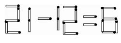
只要在右边把6改成9，就得到正确等式，如图58。
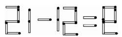
如果不许移动任何火柴，就要把原图变成正确等式，能做到吗？
可以做到，只要把图形倒过来看就行了。
水井的计量单位是“口”，人们常说“一口井”、“两口井”等等。图59是用16根火柴棒排成的一个“井”字。
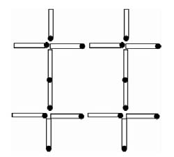
现在希望移动6根火柴，使它变成两个同样大小的“口”字。应该怎样移动？
由简单的计算知道：
16=（4×2）×2，因而可用16根火柴排成两个边长为2的正方形。
原图“井”字的中间已经有一个边长为2的正方形，只需移动“井”字四角的8根火柴，使它们也组成一个边长为2的正方形。
但是题目要求只移动6根火柴，所以应该保留“井”字的一角不动，将其他三个角上的火柴移过来，得到图60所示的答案。
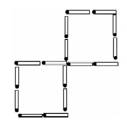
从一盒火柴中取出15根，排成图61所示的“弓”字形。
只许移动其中的4根，要用这些火柴排成两个正方形，怎样移动？
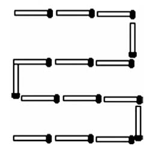
一动手搬火柴，就会发现，先要知道两个正方形各是多大。所以不妨先做一点简单的计算。
一个正方形的四边所用火柴棒的根数相同，所以排成一个正方形所用火柴棒的根数是4的倍数。
原图共有火柴15根，试从15中拆出一个4的倍数，得到
15=12+3
=12+4-1
=4×3+4×1-1
由此可见，可以设法排成一个每边3根火柴的正方形和一个每边1根火柴的正方形，使小正方形有一边在大正方形的边上。例如可以排成图62。
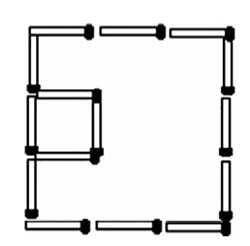
从原图移动4根火柴得到新图的方法，如图63所示，其中虚线表示移动的火柴。
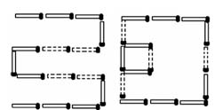
如图64所示的方格图案由28根火柴组成，共有5个正方形。
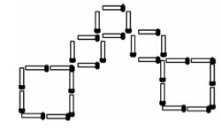
把一根火柴的长度取成长度单位，那么图64中5个正方形的总面积是：
4×2+1×3=11
还是用28根火柴，还是组成5个正方形，但是要使总面积变得更大，能不能做到呢？
可以采用图65的排列方法。
在图中，从左上到右下一连串4个小正方形，再加上外围1个大正方形，正方形的总数还是5个。
外围大正方形有4条边，每边用4根火柴；里面有3横、3竖，每横每竖各用2根火柴，总根数是：
4×4+2×3+2×3=28
所以图65用的火柴数目还是28根。
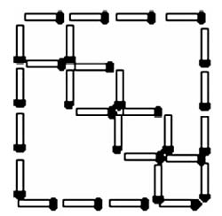
边长为1的正方形有4个，边长为4的正方形有1个，它们的面积的和是：1×4+16×1=20。
这样，就把5个正方形的总面积从11扩大到20，一根火柴也没有多用。实际上，仅仅现在一个大正方形的面积，就已超过原来5个正方形面积的总和了。
图66是一个迷宫，外形像帽子，我们把它叫做帽子迷宫。图中的黑色粗线表示墙壁，黑线间的空白表示走廊。图形下部左右两端各有一个箭头，分别指明迷宫的入口和出口。
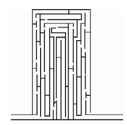
从入口走进帽子迷宫以后，应该沿着怎样的路线前进，才能到达出口呢？
解答这类走迷宫的游戏，如果只从入口单向朝前试探，往往经常碰壁，走很多冤枉路，搞得头昏眼花，心烦意乱。比较节省时间和精力的方法，是利用迷宫图，先从出口倒过来往回走走，再从入口往前试试，从两头往中间靠拢，越试越接近，最后胜利会师。
帽子迷宫的具体走法，可以看图67，其中用细线画出了一条从入口通到出口的路。
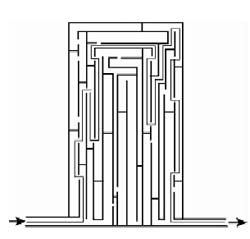
如图68，在面具架的格子里展示了35个面具，面具架的四个角上另外各有一个面具样品。凡与某个样品形状完全相同的面具都是正宗名牌产品，形状与任何样品都不同的面具是冒牌产品。已知在这个面具架里混有10个冒牌面具，究竟哪些是冒牌的呢？
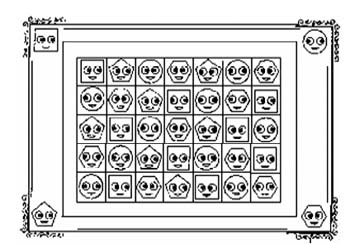
通过观察，发现冒牌面具与样品形状的区别在于黑眼珠的方向不同。由此可以查出，在面具架的5个横排里，每一排都有两个冒牌货。
为了指明冒牌面具的准确位置，现在按照面具架上标注的数字和字母，把格子的5个横排顺次编号为1行、2行、3行、4行和5行，7个竖排编号为A列、B列、C列、D列、E列、F列和G列。1行A列的位置记为1A，其余类推。在这样的编号下，10个冒牌面具的位置是：
1C，1E，2D，2F，3B，3F，4A，4E，5E，5G。
如图69，一个小孩要从右上角他现在站的地方回到左下角的家里。他希望走路不重复，并且走过的各数乘起来刚好等于1000。应该怎么走？
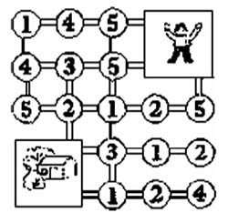
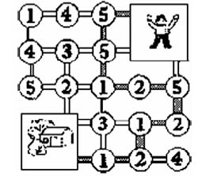
【答案】见图70。这是唯一满足条件的路线。
很多人会用扑克牌玩二十四点游戏。这是一种两人游戏，从一副扑克牌中拿走两张司令，其余52张牌都只考虑点数，A看成1，J看成11，Q看成12，K看成13。每次每人各出两张牌，共有4张，这样就得到4个数，要用这4个数通过加减乘除运算得出24，看谁的办法想得最快。
在书店里可以买到一种专门用来玩二十四点游戏的纸牌，叫做“数学24戏”，全套牌共有64张，图71和图72画出了其中的两张。
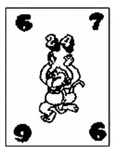
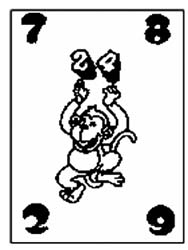
从图看出，这种二十四点牌，每一张的四个角上各有一个数字。玩的时候，每次只拿出一张牌，要用这张牌四个角上的数字通过加减乘除运算得出24。
例如，在图中，牌角上的四个数字是6，7，9，6。经过试探，知道从它们可以通过下面的运算得到24：
（7+6-9）×6=24
（6+6）×（9-7）=24
图2牌角上的数字是7，8，2，9。用下面的算式可以从这些数字得到24：
27÷9×8=24
在加、减、乘、除四则运算中，比较复杂的题目，都要先列竖式进行演算。
常见的竖式，都是单纯的求和或差，或积或商。竖式谜，却只提供不完全的条件。有时给出几个或一个数字，隐去了其他各数；有时一个数字也没有，只用“□”或“★”等特殊符号，把竖式的框架显示出来。
这种竖式看上去像一团迷雾，扑朔迷离，简直是个没解开的谜。只有熟练算法、算理，根据已提供的点滴信息，分析、推理，顺藤摸瓜，才能使一个个隐去的数字重新出现。
解加、减法的竖式谜，主要根据进位、退位情况，进行分析、判断。乘、除法，除了考虑进、退位问题，还要根据乘、除法的法则，认真推敲。一般要先将容易找出的数字填出来，这样，未知数的范围便越来越小，最终便可找出全部隐藏的数字。
解数字谜，如同侦察员破案一样，新奇，有趣。
例1
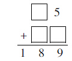
解：加数都是两位数，从第一个加数个位是5与和的个位数是9，可以
推断第二个加数的个位数必定是4。即5+？=9。从和的百位数与十位数是18，
可断定，两个加数的十位数都是9，这样，谜便揭开了：
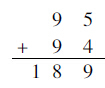
例2
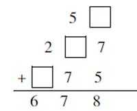
解：三个加数，只知道其中两个加数的个位分别是7、5，而和的个位却是8，肯定是进位造成的。从7+5+？=□8，可判断另一个加数的个位必为6，十位上5+□+7=□7，可断定：□加上个位进上来的1是5，去掉进上来的1应是4。百位上2+□=6，可知：□=4，去掉进上来的1，=□3。可知原式为：
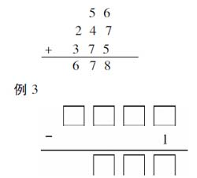
解：这个减法算式，只告知了减数是1，被减数、减数都不知道！全式应有八个数字，其中七个都是未知数，初看是比较难解的。但是认真分析一下减法算式各部分的数位，便可以找到突破口。被减数有四位，减去1后，差却成了三位数，只有相减时连续退位，才会如此。那么，什么数减去1需要向高位借数呢？只有“0”！而最高位退1后成了0，表明被减数的最高位就是“1”。这样，就可以断定被减数是1000。知道了被减数和减数，差就迎刃而解了！
可知，原式是：
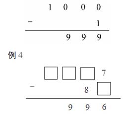
解：个位上，被减数是7，差是6，可知减数是1。十位上，减数是8，差是9，可知被减数必小于8，借位后才使差比减数大的。那么，？-8=9，可知被减数十位上是7。再看百位，因为被减数是四位数。相减后，成了三位数，差的百位数又是9，从而断定，被减数的百位上是0，千位上必定是1了。
可知，原式是：
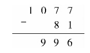
例5：下面的算式，加数的数字都被墨水污染了。你能知道被污染的四个数字的和吗？
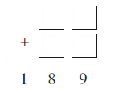
解：和的个位数是9，可知加数的个位数字相加没有进位。即两个数字和是9。和的百位与十位上的数是18，便是两个加数十位数字的和。所以，被污染的四个数字的和是：18+9=27。
例6：下面算式中的数字都被遮盖住了，求竖式中被遮盖住的几个数字的和。
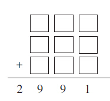
解：这是一道三个三位数的加法。从和的前两位是29，可断定三个加数的百位必须是9，因为三个9的和才是27，多出的部分便是进位造成的。同理，可断定加数的三个十位数字的和，也必须是9，多出的2（29-27），是个位进位造成的。而和的个位数是1，断定三个加数的个位数字和是21。
因此，被遮盖的数的和是：
27+27+21=75。
例7
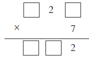
解：这是个三位数与一位数相乘的算式。被乘数只知道十位数是2，积只知道个位数是2，乘数是7，其余都是未知数！但是从个位的一个数与7相乘，积的个位数是2，可推断被乘数的个位数只能是6。6×7=42，十位上进4。被乘数的十位数是2，20×7=140，加上进位的4，积的十位应是8，进位1。从积是三位数，可断定被乘数的百位数必为1（因为若大于1，积则为四位数了！），1×7=7，加上进上来的1，积的百位数便是8了。
可知，原式是：
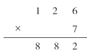
例8
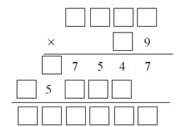
解：这是个四位数与两位数相乘的算式。从乘数的个位数9和部分积个位是7，可推知被乘数的个位是3，进2。据此，推知被乘数的十位是8，8×9=72，加上进位2，才符合积的十位数得4的要求。再根据积的百位数是5，推知被乘数百位是2，2×9=18，加上进位7，得5，进2。继而推知被乘数千位是5，5×9=45，加上进位2，才可得积的千位数7。
从被乘数是5283和第二部分积中的5，可以推断乘数的十位数，因为被乘数的前两位是5、2，经过尝试，乘数的十位数只能是3。
至此，其他各数字，便容易得出了！
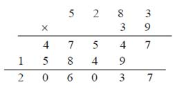
例9
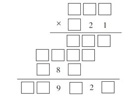
解：为了分析，我们将题中的关键位置用字母标出。算式中，只有被乘数与2的积是四位数，与A、B的积都仍是三位，从而断定A=B=1。以此为突破口，再追寻其他。
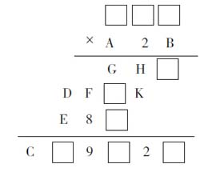
其中，部分积D与完全积中的C，也很明显是1。D由“□×2”得来，最大的一位数乘2也只能进1。由D=1，断定C=1。知道D=1，“D+E”又进位，推断E不是8必是9。如果E是8，则F非6即7，但是F+8=9，所以E不可能是8。
部分积“GH□”和“E8□”都是被乘数与1相乘得到的，所以，E=G=9，H=8。
知道了H=8，从“8+K=□2”断定K=4。K是被乘数与2相乘得到的，乘2后积的尾数是4的只有2或7。
再通过一些试算，算式中的数字，便一个个都推断了出来：
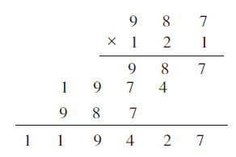
例10
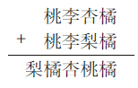
题中的“桃、李、杏、橘、梨”各代表什么数字，算式才能成立？
解：这是由数种水果摆成的加法算式。在同一道题中，同一种水果，不论它在哪个数位上，代表的数字都是相同的。
本题中，“梨”是由“桃+桃”进位得出的，可知它代表1，因为两个数字相加只能进“1”。
从个位“橘+橘”仍得“橘”，可知“橘=0”。再从“桃+桃=橘”，可知“桃=5”。
从“杏+梨=桃”，已知梨=1，桃=5，可知“杏=4”。
从“李+李=杏”，已知“杏=4”，所以“李=2”。
从而可知全式为：
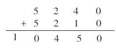
例11
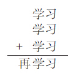
解：从竖式看，三个加数是相同的两位数，而且和的末两位与加数相同。个位的“习+习+习=习”，在1~9各数中，只有0和5可能。若“习”为5，则十位的“学”三数相加再加进位的“1”，便没有符合条件的数。所以断定“习=0”。
十位的“学+学+学=学”，也只能是5，才成立。由此，又可推断“再=1”。
所以原式是：
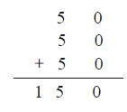
例12
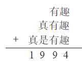
解：个位“趣+趣+趣=□4”，推断“趣=8”。和的十位数是9，其中含个位进上来的2，所以，“有+有+有=□7”，推断“有=9”，进位二。
从和的千位与百位数字特征，推断出“真=1”，“是=6”。
原式便是：
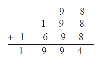
例13
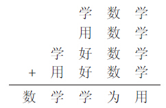
解：根据竖式特点分析：可知“数=1”，“学=2”，“用=8”。再从“学+用+好+好”中，推定“好=6”，“为=4”。
故原式为：
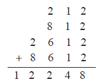
竖式谜只是四则运算中的一种，横式谜则常把加、减、乘、除四则运算贯穿在一个题目中，有着更大的灵活性。
解横式谜，不能孤立地只看一数一式，必须兼顾上下左右的联系，使所填数字适应整体要求。
例1
将0、1、2、…、9这十个数字，不遗漏，不重复，分别填入□中，组成三道算式：
□+□=□
□-□=□
□×□=□□
解：这类问题，虽然要多做尝试，但也要找准突破口，否则，胡乱尝试，费时费功也难找到正确答案。
这道题，首先要确定0的位置。经分析，前两式不可能含0。0只能在第三式的积中。两数的积含0的有：2×5=10，4×5=20，6×5=30，8×5=40，共四道算式。这样，就把尝试的范围大大地缩小了！
经验证，如下填法可符合要求：
7+1=8
9-6=3
5×4=20
例2
将1~9九个数字，不重复，不遗漏，填入下列式中的□，使等式成立。
□□÷□=□□÷□=□□÷□
解：全式中含有三道算式，都是两位数除以一位数，解题应从商入手。
商只能是一位数，若是两位数，则重复的数字太多，三道算式便不能把1~9九个数字都包括进去。
这样，只能从商是2~9各式中去尝试、筛选。
从这一些算式中，按照要求进行分析，把式中含有重复数字的式子全部剔除，余下的式子若符合条件，便是正确的解。
我们发现，只有商是7或9的有符合要求的算式。即：
21÷3=49÷7=56÷8
或：
27÷3=54÷6=81÷9
例3
想想×算算=嘻嘻哈哈
解：这个算式的特点是：相乘的两个两位数，每个数的数字分别相同，积的前两位和后两位数字也分别相同。两个两位数相乘所得的积又是四位数。根据这个特点，“想”和“算”必须＞3，否则，积只能是三位数，由此，可作如下尝试：
44×33=1452 55×33=1815
66×33=2178 77×33=2541
88×33=2904 99×33=3267
上述乘数是33的，积都不合要求。
55×44=2420 66×44=2904
77×44=3388 88×44=3872
99×44=4356
其中：77×44=3388符合题目条件。